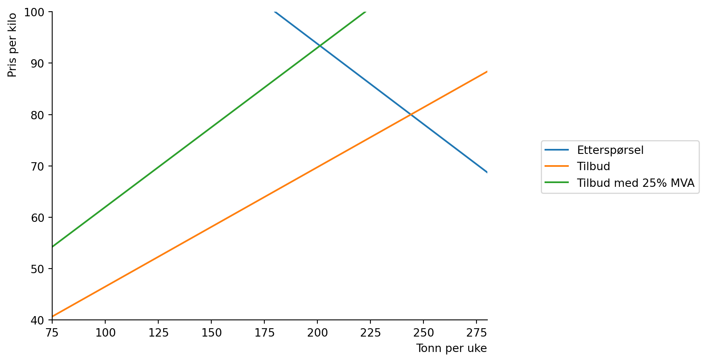

Code
# importer pakkene
import numpy as np
from matplotlib import pyplot as plt
import sympy as sp
# Etterspørsel i likning (1)
def x_d(p,T):
return 500 - 3.2*p*(1+T)
#Tilbud i likning (3)
def x_s(p,t):
return -100+4.3*p*(1-t)For å gå tilbake til hovedsiden trykker du her.
Her skal vi se på virkningen av å ilegge en vare en skatt i henhold til dens verdi (merverdiavgift). Betrakt fremstillingen av markedet for oppdrettslaks i læreboka s. 101-104. Etterspørsel er gitt ved
\[\begin{equation} x^{D}= 500 -3.2p_k\tag{1} \end{equation}\]
og tilbud:
\[\begin{equation} x^{S}= -100 + 4.3p_s\tag{2} \end{equation}\]
Kjøpere betaler \(p_k\) og selgere får \(p_s\). Prisen som selgere får er det som konsumenter betaler minus mva \(tp_k\), noe som betyr at \(p_s=(1-t)p_k\). Her er \(1>t\geq 0\) avgiftssatsen. Vi kan skrive (2) også som en funksjon på prisen som konsumenten betaler:
\[\begin{equation} x^{S}= -100 + 4.3 p_k(1-t)\tag{3} \end{equation}\]
# importer pakkene
import numpy as np
from matplotlib import pyplot as plt
import sympy as sp
# Etterspørsel i likning (1)
def x_d(p,T):
return 500 - 3.2*p*(1+T)
#Tilbud i likning (3)
def x_s(p,t):
return -100+4.3*p*(1-t)# vi lager en basisfigur
p_num=np.linspace(0.1,100,100)
def create_ax():
fig, ax = plt.subplots()
ax.set_ylabel('Pris per kilo', loc='top')
ax.set_xlabel('Tonn per uke', loc='right')
ax.set(xlim=(75,280))
ax.set(ylim=(40,100))
ax.spines['top'].set_color('none')
ax.spines['right'].set_color('none')
return fig, ax
fig, ax = create_ax()
# plott funksjonene
ax.plot(x_d(p_num, 0),p_num, label='Etterspørsel')
ax.plot(x_s(p_num, 0),p_num, label='Tilbud')
ax.legend(bbox_to_anchor=(1.5,0.6));fig, ax = create_ax()
# plott funksjonene
ax.plot(x_d(p_num, 0),p_num, label='Etterspørsel')
ax.plot(x_s(p_num, 0),p_num, label='Tilbud')
ax.plot(x_s(p_num, 0.25),p_num, label='Tilbud med 25% MVA')
ax.legend(bbox_to_anchor=(1.5,0.6));
# Den grønne linjen er brattere fordi når prisen er høyere så er 75%. Det er på grunn av den prosentvise avgiften at du får en endring i tilbudskurven.
fig, ax = create_ax()
# plott funksjonene
ax.plot(x_d(p_num, 0),p_num, label='Etterspørsel')
ax.plot(x_s(p_num, 0),p_num, label='Tilbud')
ax.plot(x_s(p_num, 0.25),p_num, label='Tilbud med 25% MVA')
ax.plot(x_d(p_num, 0.25),p_num, label='Etterspørsel med 25% MVA')
ax.legend(bbox_to_anchor=(1.5,0.6));# definer symboler i sympy
x,p,t,T=sp.symbols('x p t T', positive=True, real=True)
# betingelse for likevekt
eq_cond=sp.Eq(x_d(p,T),x_s(p,t))
eq_cond\(\displaystyle - 3.2 p \left(T + 1\right) + 500 = 4.3 p \left(1 - t\right) - 100\)
# løs for p
p_eq=sp.solve(eq_cond,p)
p_eq[0]\(\displaystyle \frac{6000.0}{32.0 T - 43.0 t + 75.0}\)
# finn tilsvarende kvantum
x_eq=x_s(p_eq[0],t)
x_eq\(\displaystyle \frac{25800.0 \cdot \left(1 - t\right)}{32.0 T - 43.0 t + 75.0} - 100\)
p_eq_fn=sp.lambdify(
(t,T),
p_eq[0]
)
p_eq_fn(t,T)
lol=np.round(p_eq_fn(0.25,0.25))
lol2=np.round(p_eq_fn(0,0.25))
lol3=np.round(p_eq_fn(0.25,0))
lol4=np.round(p_eq_fn(0,0))# Likevektskvantum som funksjon av t og T
x_eq_fn=sp.lambdify(
(t,T),
x_eq
)
x_eq_fn(t,T)\(\displaystyle \frac{25800.0 - 25800.0 t}{32.0 T - 43.0 t + 75.0} - 100\)
lol5=np.round(x_eq_fn(0.25,0.25))
lol6=np.round(x_eq_fn(0,0.25))
lol7=np.round(x_eq_fn(0.25,0))
lol8=x_eq_fn(0,0)# sett inn linjer som viser likevekten
# clip_on=False for å tegne utenfor plottområdet
ax.vlines(lol7,38,lol3, linestyles='dashed', clip_on=False)
ax.hlines(lol3,75,lol7, linestyles='dashed', clip_on=False)
ax.vlines(lol6,38,lol2, linestyles='dashed', clip_on=False)
ax.hlines(lol2,75,lol6, linestyles='dashed', clip_on=False)
# sett inn likevektsverdier i figuren
ax.annotate(f'(Likevektspris med MVA)', (lol7-10, lol3-10), xytext=(lol7, lol3))
ax.annotate(f'(Likevektspris med etterspørsel med MVA)', (lol6-10, lol2-10), xytext=(lol6, lol2))
ax.legend(bbox_to_anchor=(1.6,0.6))
figp_0 = p_eq_fn(0,0)
p1 = p_eq_fn(0.25,0)
p2 = p_eq_fn(0,0.25)
p3 = p1-p_0
konsum= p3/21
konsumentensandel = konsum*100
f'''Statens inntekt er {np.round(p1-p2)}%, andelen som betales av konsumenter er {konsumentensandel}% og produsentens andel er {100-konsumentensandel}%''''Statens inntekt er 21.0%, andelen som betales av konsumenter er 63.73911432277188% og produsentens andel er 36.26088567722812%'Fordelen med stykkprisavgift er at staten får mer makt over konsumentenes forbruk, og ulempene det samme.
For å gå tilbake til hovedsiden trykker du her.